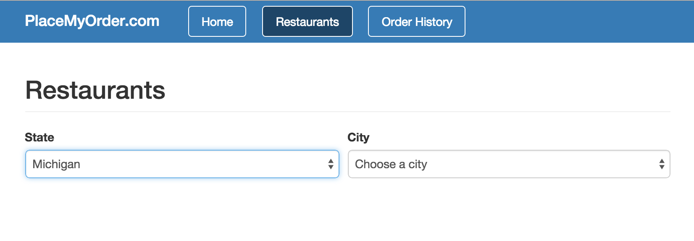

The next item we’re going to go over is can.Model.
Models make interacting with JSON REST services really easy. They do this by
encapsulating most of the code required to connect to a service and managing
the data the service returns. Additionally, can.Model extends
can.Map, meaning that the objects returned have all of
the features of a can.Map, such as being observable.
For applications requiring real-time, high performance, restful data connections
you should check out can-connect. For our simple case,
we’ll use can.Model to provide data for our state and city elements from
the last chapter.
First, let’s open the models/state.js file and add the following code:
var State = can.Model.extend({
findAll: 'GET /api/states'
}, {
// Include second, empty parameter object to set instanceProperties
});
Then add the following to models/city.js:
var City = can.Model.extend({
findAll: 'GET /api/cities'
}, {
// Include second, empty parameter object to set instanceProperties
});
Because it is a can.Construct, can.Model.extend
can take up to three parameters:
name
staticProperties
instanceProperties
A can.Model’s staticProperties parameter has several reserved properties you
can add that simplify accessing data from a JSON REST service. These
properties are:
findAll
findOne
create
update
destroy
The find*, create, update, and destroy functions are available directly
off of the object definition (i.e., they are static). The destroy function is
available off of specific instances of a can.Model. We’ll see how to
use these below.
Reminder: The number of parameters you pass in to an extend function is
important. If you pass in a single parameter object, the extend function will
use that to set the instanceProperties. If you pass in two parameter
objects, the first object passed in will be used to set the
staticProperties. The second parameter will be used to set the
instanceProperties. Here, we only want to set the staticProperties, so we
must pass in a second, empty object.
A few examples below illustrate this important point:
var MyModel = can.Model.extend({
findAll: function () {
// Static function
}
}, {
destroy: function () {
// Instance function
}
});
MyModel.findAll(); // Reference a function defined on the constructor
var modelInstance = new MyModel();
modelInstance.destroy(); // Reference a function defined on the prototype
The Data for Our Model
We’re not going to connect to a server to retrieve our data; however, we’re
going to code our model as if we were. How can this possibly work? CanJS
provides a handy utility, can.fixture, that we can use to easily mimic the
functionality of connecting to a server. can.fixture
intercepts an AJAX request and simulates a server response with a file or a
function. You can use can.fixture to develop JavaScript independently of
backend services.
can.fixture is not included with the base CanJS package. It’s a good practice
to keep it separate from your production CanJS library, which is why we
downloaded it as a separate file, and then loaded it into index.html via a separate
script tag, rather than including it with our custom download.
If you use can.fixture during development, remember
to remove it once you need to connect to your REST services.
Let’s create a fixture that will respond to our requests for the list of states.
Add the following code to the models/fixtures.js file:
The first argument to can.fixture, GET /api/states, tells CanJS to
intercept any GET requests to the resource /api/states. The second argument
is a path to a file with the data the fixture will return. Because we’re simulating
a findAll function, we need to return an array. The findAll function
expects an array. By default, if it does not receive one, it will throw an error.
If you need to connect to services that return data that doesn’t match the expected
return type of the find* functions, don’t fret. There are ways to manage this,
which we’ll work with later on.
Let’s also create a fixture that will respond to our requests for the list
of cities for each state. This one is going to be a little different because
we want to be able to return a different list depending on which state is
included in the request. Thankfully, can.fixture is flexible and allows
you to dynamically respond to requests. Let’s add the following code to the
models/fixtures.js file:
The first argument to can.fixture, GET /api/cities, is similar to our
restaurants example: we’re setting up this fixture to intercept any GET
requests to /api/cities. The second argument, however, is different: it
is a function that returns the data we want to get when the application makes
a service call. In our example, we’re making an AJAX request (via
can.ajax) to get the fixture data from a JSON file,
then responding to the request with the data we fetched.
Connecting the Model to the Component
It’s time to connect all of this together in our view model. Simply open up
components/restaurant_list/restaurant_list.js, find the states property:
cities: {
get: function() {
var state = this.attr('state');
return state && this.attr('citiesByState')[state];
}
},
and replace it with this:
cities: {
get: function() {
var state = this.attr('state');
return state ? City.findAll({ state: state }) : null;
}
},
You can remove the citiesByState property since we won’t be using it anymore.
Let’s also update the components/restaurant_list/restaurant_list.stache file
to match the changes we made in the view model. The most significant change is
that our cities and states properties now return a promise
instead of just an array. Find the form element:
Note that there are a few ways to call a findAll function on a can.Model. The
first way is to call the function explicitly. Using the State model as an
example, that would look like this:
We also have the ability to use can.Deferred, which allows us to chain
callback functions off of each other. You can read more about this from the
jQuery API. Using this
method, we could write our findAll like this:
State.findAll({ /* paramsObject */ })
/* When the API call succeeds, .done() is called */
.done(function(returnedObject) {
// ...
})
/* When the API call errors, .fails() is called */
.fail(function(errorObject) {
// ...
});
Both are acceptable, but throughout the guide we will use the Deferred method
as it more explicitly states which callback function is which.
Finally, let’s add the scripts we modified to our index.html file.
Find these lines:
<!-- Replace with city model script -->
<!-- Replace with fixtures script -->
<!-- Replace with state model script -->
Let’s go back to our app now and see what happens! If everything went
according to plan, you should be able to refresh the Restaurants page
and see the same list that we had before. Selecting a state, then a city,
should work the same as well.
In this Chapter
can.Modelcan.fixturecan.Modelwithcan.ComponentGet the code for: chapter: data models and fixtures
The next item we’re going to go over is can.Model. Models make interacting with JSON REST services really easy. They do this by encapsulating most of the code required to connect to a service and managing the data the service returns. Additionally,
can.Modelextends can.Map, meaning that the objects returned have all of the features of acan.Map, such as being observable.For applications requiring real-time, high performance, restful data connections you should check out can-connect. For our simple case, we’ll use
can.Modelto provide data for our state and city elements from the last chapter.First, let’s open the
models/state.jsfile and add the following code:Then add the following to
models/city.js:Because it is a can.Construct,
can.Model.extendcan take up to three parameters:namestaticPropertiesinstancePropertiesA
can.Model’sstaticPropertiesparameter has several reserved properties you can add that simplify accessing data from a JSON REST service. These properties are:findAllfindOnecreateupdatedestroyThe
find*,create,update, anddestroyfunctions are available directly off of the object definition (i.e., they are static). Thedestroyfunction is available off of specific instances of acan.Model. We’ll see how to use these below.Reminder: The number of parameters you pass in to an
extendfunction is important. If you pass in a single parameter object, theextendfunction will use that to set theinstanceProperties. If you pass in two parameter objects, the first object passed in will be used to set thestaticProperties. The second parameter will be used to set theinstanceProperties. Here, we only want to set thestaticProperties, so we must pass in a second, empty object.A few examples below illustrate this important point:
The Data for Our Model
We’re not going to connect to a server to retrieve our data; however, we’re going to code our model as if we were. How can this possibly work? CanJS provides a handy utility,
can.fixture, that we can use to easily mimic the functionality of connecting to a server.can.fixtureintercepts an AJAX request and simulates a server response with a file or a function. You can usecan.fixtureto develop JavaScript independently of backend services.can.fixtureis not included with the base CanJS package. It’s a good practice to keep it separate from your production CanJS library, which is why we downloaded it as a separate file, and then loaded it into index.html via a separate script tag, rather than including it with our custom download. If you usecan.fixtureduring development, remember to remove it once you need to connect to your REST services.Let’s create a fixture that will respond to our requests for the list of states. Add the following code to the
models/fixtures.jsfile:The first argument to
can.fixture,GET /api/states, tells CanJS to intercept anyGETrequests to the resource/api/states. The second argument is a path to a file with the data the fixture will return. Because we’re simulating afindAllfunction, we need to return an array. ThefindAllfunction expects an array. By default, if it does not receive one, it will throw an error. If you need to connect to services that return data that doesn’t match the expected return type of thefind*functions, don’t fret. There are ways to manage this, which we’ll work with later on.Let’s also create a fixture that will respond to our requests for the list of cities for each state. This one is going to be a little different because we want to be able to return a different list depending on which state is included in the request. Thankfully,
can.fixtureis flexible and allows you to dynamically respond to requests. Let’s add the following code to themodels/fixtures.jsfile:The first argument to
can.fixture,GET /api/cities, is similar to our restaurants example: we’re setting up this fixture to intercept anyGETrequests to/api/cities. The second argument, however, is different: it is a function that returns the data we want to get when the application makes a service call. In our example, we’re making an AJAX request (via can.ajax) to get the fixture data from a JSON file, then responding to the request with the data we fetched.Connecting the Model to the Component
It’s time to connect all of this together in our view model. Simply open up
components/restaurant_list/restaurant_list.js, find the states property:and replace it with this:
In the same file, find the cities property:
and replace it with this:
You can remove the
citiesByStateproperty since we won’t be using it anymore. Let’s also update thecomponents/restaurant_list/restaurant_list.stachefile to match the changes we made in the view model. The most significant change is that ourcitiesandstatesproperties now return a promise instead of just an array. Find theformelement:and replace it with this new one:
Note that there are a few ways to call a
findAllfunction on acan.Model. The first way is to call the function explicitly. Using theStatemodel as an example, that would look like this:We also have the ability to use
can.Deferred, which allows us to chain callback functions off of each other. You can read more about this from the jQuery API. Using this method, we could write ourfindAlllike this:Both are acceptable, but throughout the guide we will use the Deferred method as it more explicitly states which callback function is which.
Finally, let’s add the scripts we modified to our
index.htmlfile. Find these lines:and replace it with these lines:
Let’s go back to our app now and see what happens! If everything went according to plan, you should be able to refresh the Restaurants page and see the same list that we had before. Selecting a state, then a city, should work the same as well.

‹ View Models Loading States ›